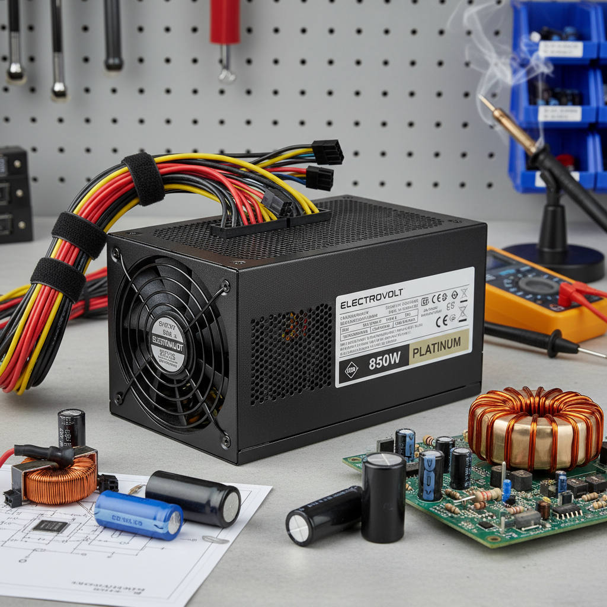

Електроснабдителни системи
Проектиране, изграждане и експлоатация на мрежи в сгради и промишлени обекти. Работа с техническа документация и изчисления.
PGMETT SHUMEN
Майсторството на електрическите системи: от проектиране на мрежи до автоматизирано управление на енергията.
ИНИЦИАЛИЗИРАЙ СИСТЕМАТАПроектиране, изграждане и експлоатация на мрежи в сгради и промишлени обекти. Работа с техническа документация и изчисления.
Локализиране на повреди в критична инфраструктура и технически контрол на електроинсталации.
Работа с програмируеми логически контролери и софтуер за отдалечена диагностика на системи.
Монтаж и настройка на електрически машини, табла и аварийни захранвания по най-високи стандарти.



Работа в големи промишлени и енергийни предприятия.
Ръководене на монтажни дейности и проектиране на инсталации.
Специалист по диагностика и контрол на електрооборудване.